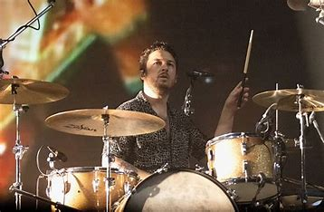
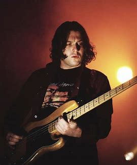

| Nombre |
Imagen |
Biografia |
| Alex Turner |
|
Alexander David Turner (Sheffield, Inglaterra; 6 de enero de 1986) es un cantante, músico,
compositor y productor discográfico británico, conocido por ser el vocalista y principal
compositor de la banda de rock Arctic Monkeys. También ha publicado con su proyecto paralelo The Last Shadow Puppets y en solitario. |
| Matt Helders |
 |
Matthew Helders (Sheffield, Inglaterra, 7 de mayo de 1986) es el baterista de la banda británica Arctic Monkeys. Es el corista más destacable, apareciendo en pistas como “You Probably Couldn’t See For The Lights But You Were Staring Straight At Me”, "I Bet You Look Good on the Dancefloor”, "Teddy Picker" y "D Is For Dangerous". |
| Jamie Cook |
|
Cook ha sido el miembro más franco de la banda, diciendo: (que él) “odia jodidamente a la prensa” y defendiendo a la banda numerosas veces diciendo: “No podría vernos siendo como Coldplay, sería muy aburrido. Haces giras por tres años y tocas el mismo concierto noche tras noche. |
| Nick O' Malley |
 |
O'Malley empezó a tocar el bajo a la edad de 16 años, luego de que sus ambiciones de tocar la batería y la guitarra fueran negadas por su padre.[1] Antes de Arctic Monkeys, O'Malley tocaba el bajo en una banda de rock de garaje llamada The Dodgems. |